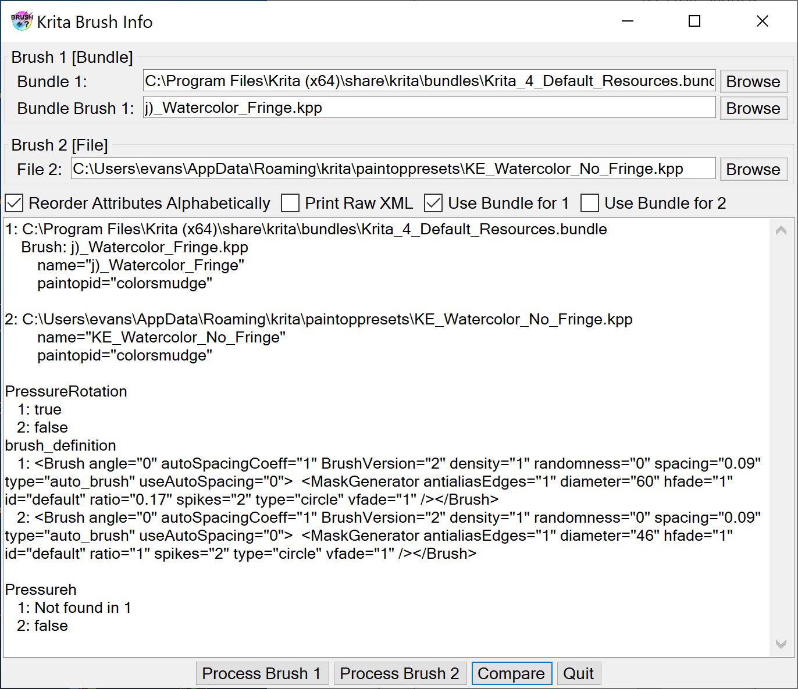

Krita Brush Info is designed to read a Krita brush configuration and display it in a readable form. It can also compare two brushes and show the differences. This can be useful for seeing the structure of the brush parameters and to easily compare the differences between two brushes.
Acknowledgements are at the end of the page.
Krita brush parameters are stored in 200 x 200 PNG files. These files typically have the extension .kpp in Krita. The PNG image is the brush icon. These brushes may be built into Krita or come in resource bundles. In Krita you can modify and save the brushes as new brushes. These are stored in the paintoppresets folder in the Krita resources folder. You can find this folder in Krita 4 by going to Settings | Manage Resources... and then selecting Open Resource Folder. The brush presets are stored in the paintoppresets sub-folder.
The brush parameters are stored in the metadata of the PNG file. There are no standards for storing metadata for PNG, as there are for JPEG and other file formats. However, the program ExifTool written by Paul Harvey (see Acknowledgements) does find the metadata. There may be other metadata in the file, but the brush parameters are in a field named Preset. This field is in the form of an XML element, also named Preset. This element has attributes including the name of the brush, and also a number of sub-elements, which are XML elements named param. These param elements contain the brush parameters, either as attributes or sub-elements. (This information does not appear to be documented and has been obtained by experimentation. It may be wrong or incomplete.)
What Krita Brush Info does is run ExifTool on the .kpp files, extract the Preset element, and parse it for the various attributes and sub-elements. It displays these in a reasonably-easy-to-read form. It can get the attributes and parameters for two different files and compare them, displaying only the differences.
This is a screen shot of The Krita Brush Info interface.

The interface has a place to enter the names of two .kpp files. There is a check box to set if you want to compare parameters with the attributes in the order stored or sorted alphabetically. Unless this is checked, if the alphabetic order is different in two files, they will be marked as different even when the attributes have the same values.
There are buttons to process File 1 or File 2, to Compare the two files, and to quit. There is no File menu. There is, however, a context menu, obtained by right-clicking on the form. It contains items to display an Overview, set Preferences, and to display an About box.
There is currently only one preference, the location of the ExifTool executable. (You want to use exiftool.exe, not exiftool(-k).exe.)
If you are installing from a download, just unzip the files into a directory somewhere convenient. Then run it from there. If you are installing from a build, copy these files and directories from the bin/Release directory to a convenient directory.
To uninstall, just delete these files.
You also need to install ExifTool (see Acknowledgements). You specify the location of exiftool.exe in the Preferences.
Krita Brush Info uses ExifTool by Paul Harvey to read the EXIF information in the .kpp preset file. This is free software; you can redistribute it and/or modify it under the same terms as Perl, which it uses.